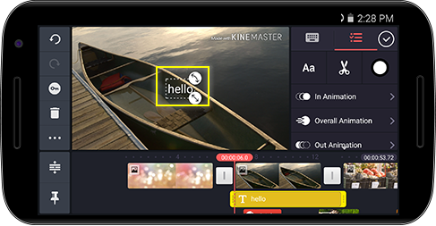
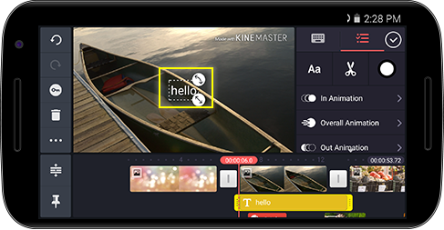

, um den Medienbrowser (Video) zu öffnen; wählen Sie dort das Video, das Sie als Ebene hinzufügen möchten.
, um den Medienbrowser (Video) zu öffnen; wählen Sie dort das Video, das Sie als Ebene hinzufügen möchten.Tippen Sie auf  und dann auf , um den Medienbrowser (Video) zu öffnen; wählen Sie dort das Video, das Sie als Ebene hinzufügen möchten.
und dann auf , um den Medienbrowser (Video) zu öffnen; wählen Sie dort das Video, das Sie als Ebene hinzufügen möchten.


Tippen Sie auf  und dann auf
und dann auf  , um den Medienbrowser (Bild) zu öffnen; wählen Sie dort das Bild, das Sie als Ebene hinzufügen möchten.
, um den Medienbrowser (Bild) zu öffnen; wählen Sie dort das Bild, das Sie als Ebene hinzufügen möchten.


Tippen Sie auf  und dann auf
und dann auf  , um die gewünschten Sticker auszuwählen.
, um die gewünschten Sticker auszuwählen.


Tippen Sie auf  und dann auf
und dann auf  , um den gewünschten Text für die Ebene einzugeben.
, um den gewünschten Text für die Ebene einzugeben.
 

Tippen Sie auf  und dann auf
und dann auf  , um einen handgeschriebenen Text oder eine Zeichnung hinzuzufügen.
, um einen handgeschriebenen Text oder eine Zeichnung hinzuzufügen.


Nachdem Sie mit  eine Ebene erstellt haben, tippen Sie auf die Registerkarte
eine Ebene erstellt haben, tippen Sie auf die Registerkarte  und passen Sie die Optionen wie gewünscht an.
und passen Sie die Optionen wie gewünscht an.